Me
Developer Advocate at Google
@Paul Kinlan
Building Web apps of the future today, tomorrow and yesterday
By @Paul Kinlan
I heard this on a train
Oh I don't use apps on the web, I just use it for news and wikipedia— Some guy
Building
Apps for
Yesterday
Don't do it
Building
Apps for
Today
IT's HARD
Very HARD
It is also Broken
DateDiff anyone?
We can still do some Amazing stuff
e.g Chrome Web Lab
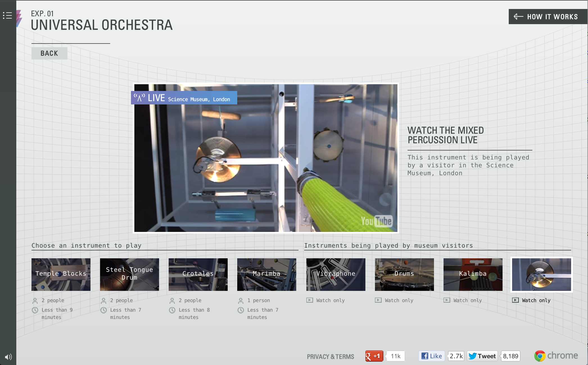chromeweblab.com
And Jam with Chrome
Launched yesterday!
jamwithchrome.com
What I want from an app
- Availability
With added
- Interoperability
- Experience
Availability
Availability - noun: The act of being awesome all the time.— Kinsters Compendium of Wordage
Why offline?
- Mobile?
- Responsiveness?
Be there when your users need you.
Experiment with Offline Apps
- Top 50(ish) apps on iOS and Android
- Downloaded App
- Pulled the plug
- Loaded app
 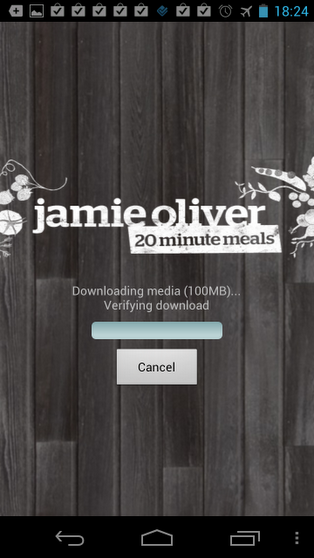
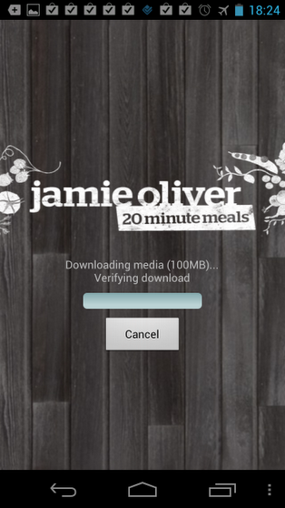
 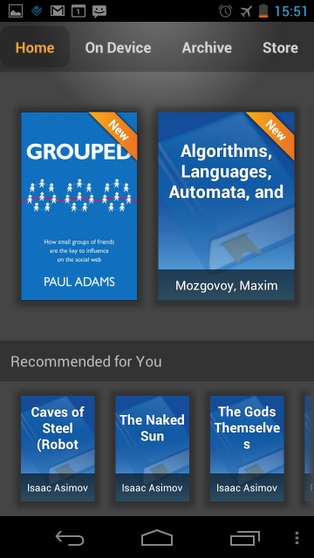
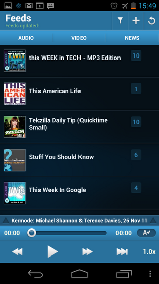
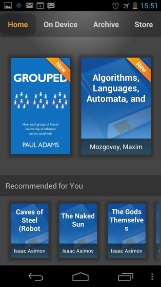
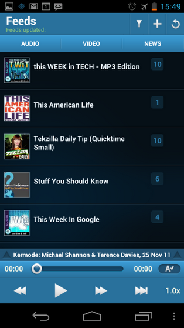
Same Experiment with Offline Web Apps
Most apps
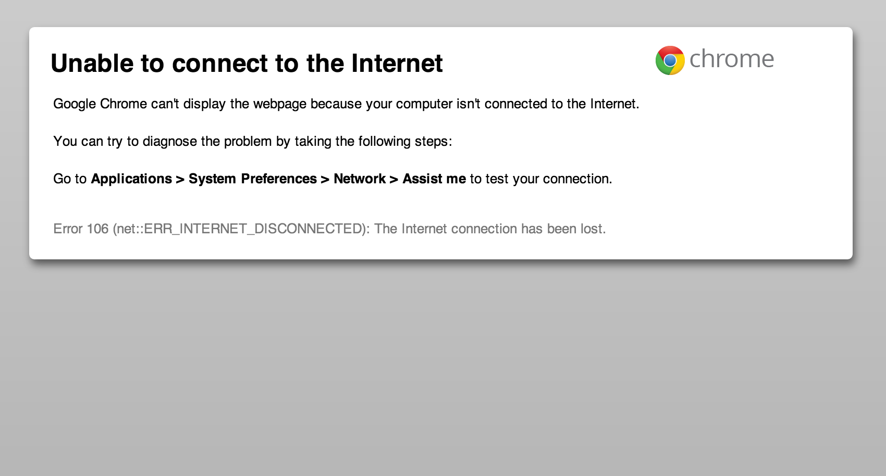The exception
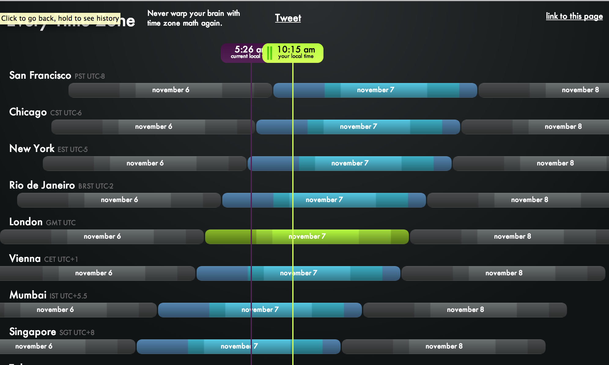Summary
Native Apps win hands down
- Lots works brilliantly offline, no online requirement.
- Many load and offer UI with cached content but needs web for more information.
- Many games loads and then download even more data.
- Minority of apps fail to load.
The user is kept inside the app experience
Web Developers are from Venus
I will add offline support into my app
— A Web Dev
I will add online support into my app
— An App Dev
WARNING
Offline apps are a paradigm shift for web developers
The Web is a hodge-podge of API's that don't quite work together
AppCache
If you want to have any offline experience at all, you have to use it.
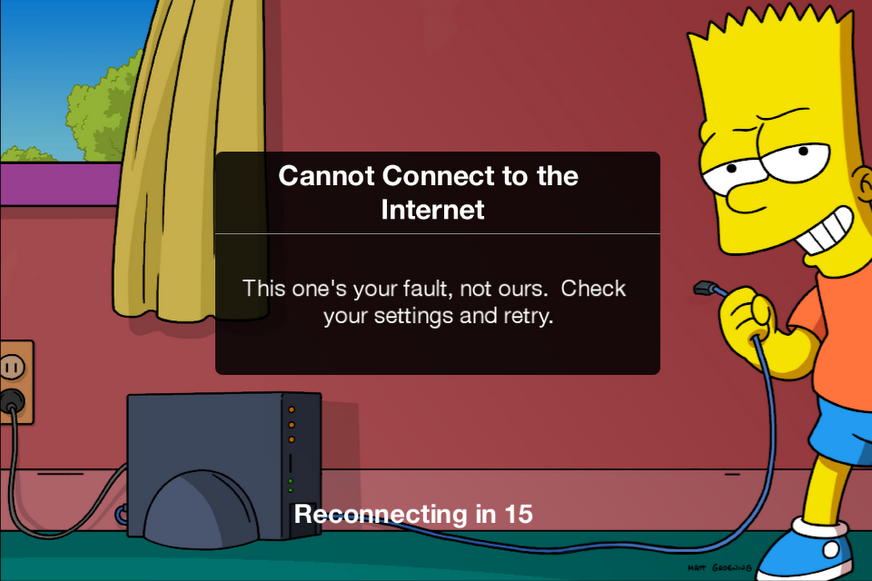
AppCache Hints
- Prefer client side templating
- Avoid HTML5 history, prefer onhashchange
- Put webfonts in to the app cache
- NETWORK: * for using analytics
Storage?
If you want to have any offline storage at all, you have to use both indexedDB and WebSQL.
Note: The versioning API just changed :\
Interoperability
No App is an island. — Paul Kinlan
Web Intents
Back to the drawing board.
 Shawn Hoke
Shawn Hoke
register Protocol Handler
Use well known schemes
navigator.registerProtocolHandler("mailto", "http://paul.kinlan.me/?%s")Create new schemes
navigator.registerProtocolHandler("web+ImOnaHorse", "http://paul.kinlan.me/?%s")Warning: Does not work well offline.
register Content Handler
navigator.registerContentHandler("text/plain", "http://paul.kinlan.me/?%s")Warning: Does not work well offline.
API's are only half the problem
Eco-systems need to be built around API's.
You have to provide value to the developer.
Experience
Do what the user expects — Paul Kinlan
Download
Navigating /to something isn't cool.
{kind=link}
Navigating <a href="images/me.png" download="awesome.png">/to something isn't </a> cool.createObjectURL
window.URL.createObjectURL(b);This is a story all about how...
var downloadFile = function() {
window.URL = window.webkitURL || window.URL;
var typer = document.getElementById("typer");
var b = new Blob([typer.textContent], {type: "text/plain"})
var a = document.createElement('a');
a.download = container.querySelector('input[type="text"]').value;
a.href = window.URL.createObjectURL(b);
a.textContent = 'Download ready';
a.dataset.downloadurl = ["text/plain", a.download, a.href].join(':');
output.appendChild(a);
};Accessing Files
<input type=file [webkitDirectory]>input.onchange = function(e) {
var files = e.srcElement.files;
for(var f in files) {
var file = files[f];
var li = document.createElement("li");
li.textContent = file.name;
filelist.appendChild(li);
}
};Accessing Dragged Files
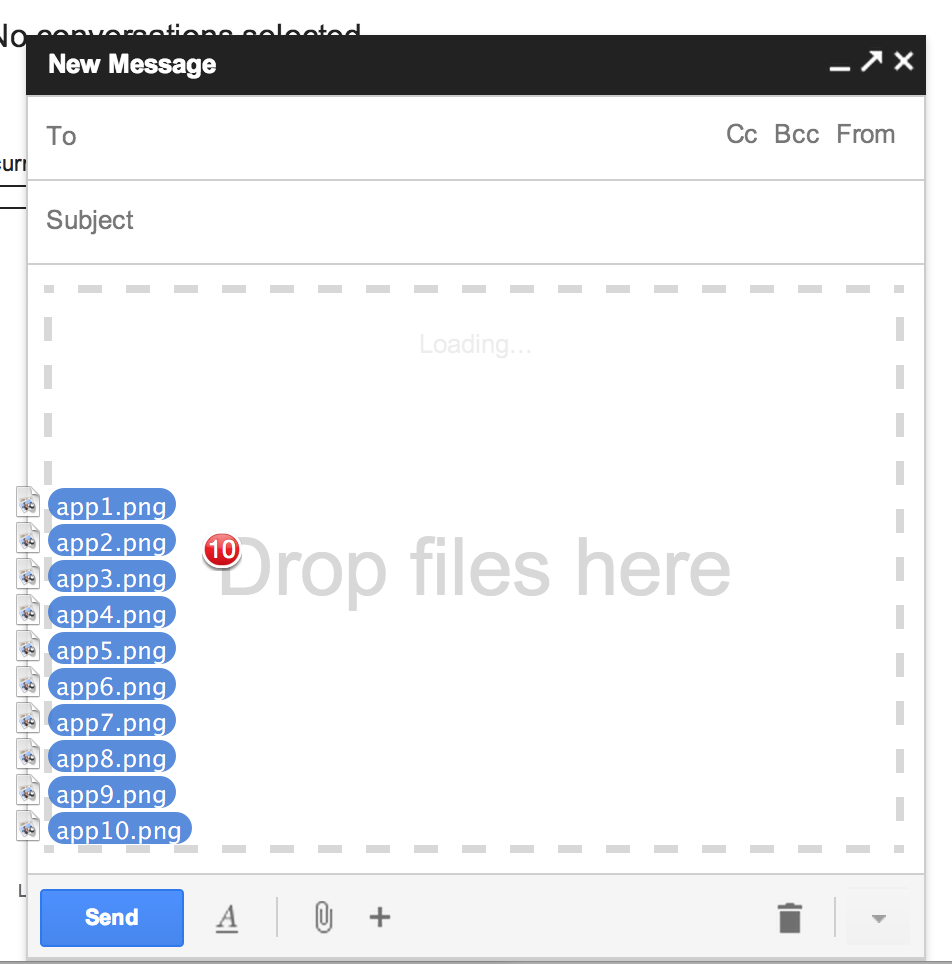target.ondrop = function(e) {
e.preventDefault();
var files = e.dataTransfer.files;
for(var f in files) {
var file = files[f];
var li = document.createElement("li");
li.textContent = file.name;
filelist.appendChild(li);
}
};Actually Reading the file
var file = // Result of operation
var reader = new FileReader();
reader.onload = function(e) {
// READ first 10 bytes
var bytes = new Uint8Array(e.target.result.slice(0,10));
for(var b = 0; b < bytes.length; b++ ) {
drop2.innerText += "0x" + bytes[b].toString(16);
}
};
// Read the data in
reader.readAsArrayBuffer(file);I can haz file system
window.requestFileSystem(
TEMPORARY, // persistent vs. temporary storage
1024 * 1024, // size (bytes) of needed space
initFs, // success callback
opt_errorHandler // opt. error callback, denial of access
);Caching Files
var xhr = new XMLHttpRequest();
xhr.open('GET', '/path/to/image.png', true);
xhr.responseType = 'arraybuffer';
xhr.onload = function(e) {
window.requestFileSystem(TEMPORARY, 1024 * 1024, function(fs) {
fs.root.getFile('image.png', {create: true}, function(fileEntry) {
fileEntry.createWriter(function(writer) {
writer.onwriteend = function(e) { ... };
writer.onerror = function(e) { ... };
writer.write(new Blob([xhr.response], {type: 'image/png'}));
}, onError);
}, onError);
}, onError);
};
xhr.send();Filer.js makes it easy
github.com/ebidel/filer.jsvar filer = new Filer();
filer.init({persistent: false, size: 1024 * 1024}, function(fs) {...}, onError);
filer.ls('path/to/some/dir/', function(entries) { ... }, onError);
filer.cp('file.txt', '/path/to/folder', 'newname.txt', function(entry) {
// entry.fullPath == '/path/to/folder/newname.txt'
}, onError);
var b = new Blob(['body { color: red; }'], {type: 'text/css'});
filer.write('styles.css', {data: b, type: b.type}, function(entry, writer) {
...
}, onError);Make the file system API cross browser
https://github.com/ebidel/idb.filesystem.js and a Demo (http://goo.gl/WSRy0)It's just the same. FTW.
Building
Apps for
Tomorrow...
Camera input
var options = {video: true, audio: false};
var v = document.querySelector('#camera');
var callback = function(s){
v.src = window.URL.createObjectURL(s);
}
navigator.getUserMedia(options, callback);Audio input
// success callback when requesting audio input stream
function gotStream(stream) {
var audioContext = new webkitAudioContext();
// Create an AudioNode from the stream.
var mStreamSource = audioContext.createMediaStreamSource(stream);
// Connect it to the destination to hear yourself (or any other node for processing!)
mStreamSource.connect( audioContext.destination );
}
navigator.webkitGetUserMedia( {audio:true}, gotStream );Apply CSS Filters
video.cssfilter {
-webkit-animation: filters-anim 2s infinite alternate;
}
@-webkit-keyframes filters-anim {
0% {
-webkit-filter: blur(0px) grayscale(0);
}
50% {
-webkit-filter: blur(3px) grayscale(0.5);
}
100% {
-webkit-filter: blur(6px) grayscale(1);
}
}CSS Shaders
.demo-5 .target {
transition: all 2000ms;
-webkit-filter: custom(url(shaders/demo5.vert) mix(url(shaders/demo5.frag) normal source-atop),
40 40,
time 0,
transform perspective(600));
}
.demo-5 .target:hover {
-webkit-filter: custom(url(shaders/demo5.vert) mix(url(shaders/demo5.frag) normal source-atop),
40 40,
time 2,
transform perspective(600) rotateX(35deg) scale(0.8));
}Web RTC
Now for something more awesome.
A New Platform
Why?!?!
Apps should be offline by default
Apps should load regardless of connection.
Apps should look and feel native
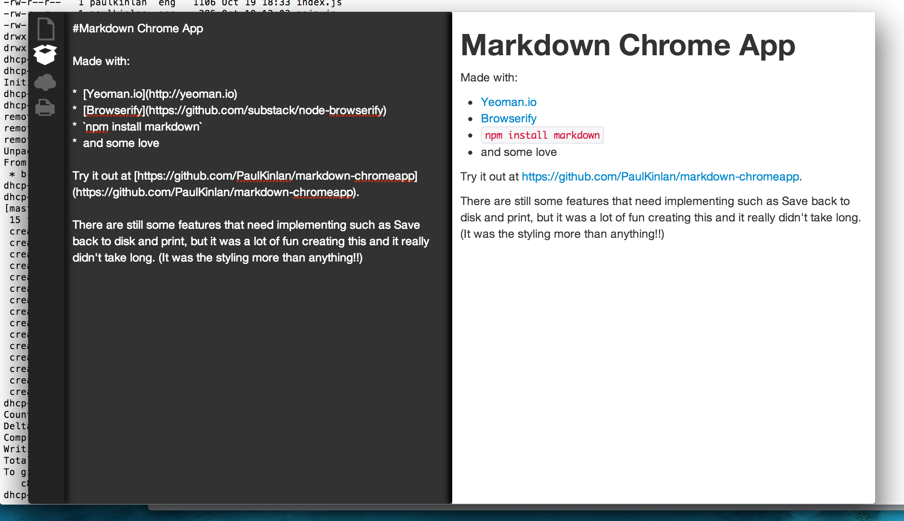Apps should be able access to Native API's
- Network Sockets
- Serial Ports
- USB and Bluetooth
- File System
- Media Galleries
Apps should be Secure by default
CSP FTW!
# Block everything, then whitelist from there.
default-src 'none';
# Accept CSS from the extension's package.
style-src 'self';
# Accept JavaScript from the extension's package.
script-src 'self';
# Allow images from Google Maps to load over HTTPS.
img-src https://maps.google.com;alert(eval("foo.bar.baz"));
window.setTimeout("alert('hi')", 10);
window.setInteral("alert('hi')", 10);
new Function("return foo.bar.baz");Finally. Apps should be built using technology that we know and love
HTML
CSS
JAVASCRIPT
Access to Hardware
Network Sockets
Web Server in the Browser
It's just a Socket
var socket = chrome.socket;
socket.create("tcp", {}, function(_socketInfo) {
socketInfo = _socketInfo; // Cache globally [eek]
socket.listen(socketInfo.socketId, "127.0.0.1", 8080, 20, function(result) {
//Accept the first response
socket.accept(socketInfo.socketId, onAccept);
});
});But there is a lot of code
var onAccept = function(acceptInfo) {
// This is a request that the system is processing.
// Read the data.
socket.read(acceptInfo.socketId, function(readInfo) {
// Parse the request.
var data = arrayBufferToString(readInfo.data);
// We only want to handle get requests
if(data.indexOf("GET ") == 0) {
// we can only deal with GET requests
var uriEnd = data.indexOf(" ", 4);
if(uriEnd < 0) { /* throw a wobbler */ return; }
var uri = data.substring(4, uriEnd);
var file = filesMap[uri]; // pick out the file we want to server
if(!!file == false) { /* File does not exist */ return; }
write200Response(acceptInfo.socketId, file);
}
else {
// Throw an error
socket.destroy(acceptInfo.socketId);
// We need to say that we can accept another incoming request.
socket.accept(socketInfo.socketId, onAccept);
}
});
};Can we use an existing eco-system?
Like Node?
Node API's in the Browser
Markdown
onload = function() {
var mdEl = document.getElementById("markdown");
var htmlEl = document.getElementById("html");
var md = require( "markdown" ).markdown;
mdEl.onkeypress = function() {
var output = md.toHTML( mdEl.value );
htmlEl.innerHTML = output;
};
};$ browserify -r markdown -o bundle.jsNode API's in the Browser
Browserify + Chrome Mapping = WIN
https://github.com/iceddev/http-chromify powered by Browserify Chromevar http = require('http');
http.createServer(function (req, res) {
res.writeHead(200, {'Content-Type': 'text/plain'});
res.end('Hello World\n');
}).listen(1337, '127.0.0.1');
console.log('Server running at http://127.0.0.1:1337/');Closing thoughts
Do Awesome
Thanks
@Paul_Kinlan
+Paul Kinlan
http://paul.kinlan.me
Links
- Browserify - github.com/substack/node-browserify
- Chromeify - github.com/GoogleChrome/browserify-chrome
- net - github.com/GoogleChrome/net-chromeify
- http - github.com/iceddev/http-chromify